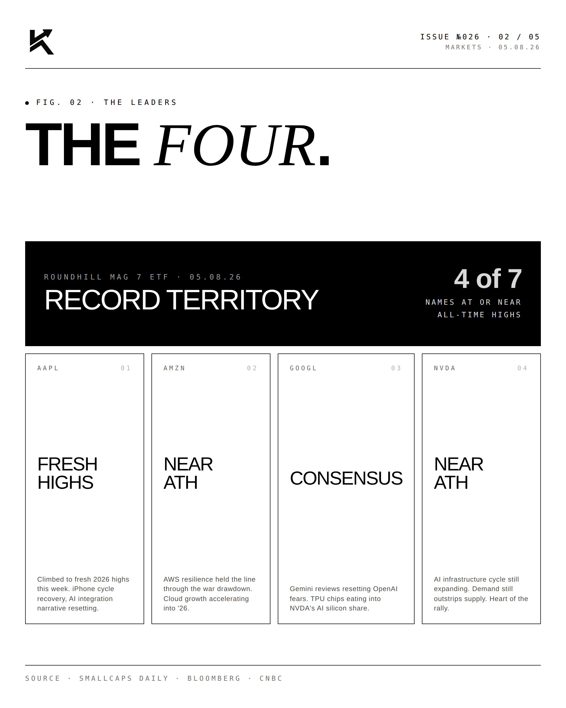
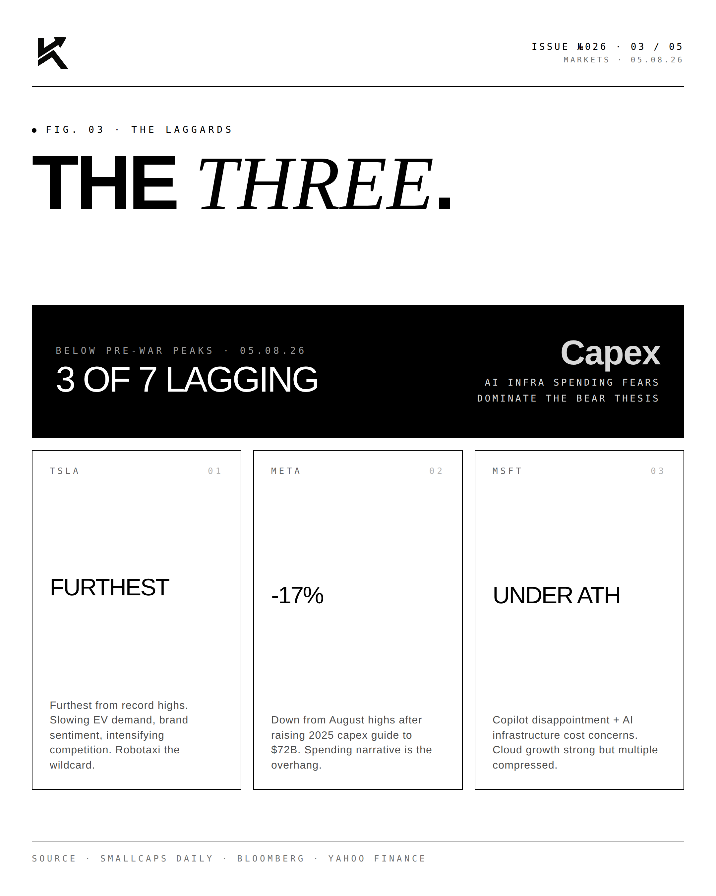
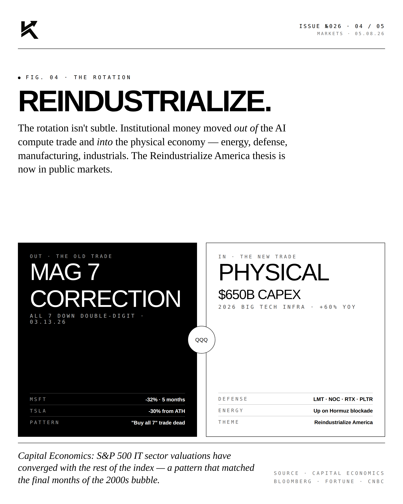
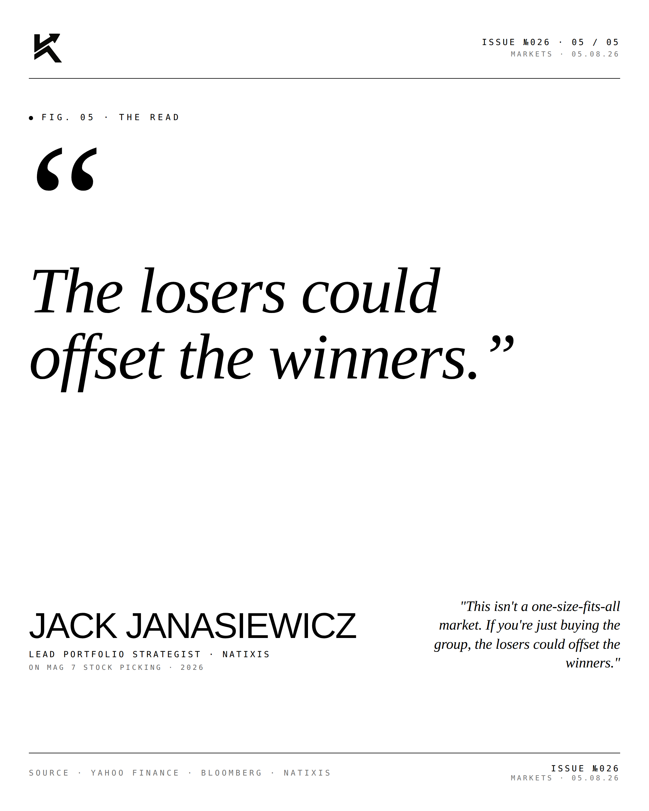

Diverged.
The Magnificent Seven trade is over. Four winners. Three laggards. The basket has fractured. Stock picking inside Big Tech is back.

The Four.
Four names did the heavy lifting through the post-correction recovery: AAPL, AMZN, GOOGL, NVDA. Each fully recovered from the March 2026 drawdown. Each at or near all-time highs. Each driven by a different fundamental story — iPhone cycle, cloud growth, Gemini reset, AI infrastructure.

The Three.
Three names lagged: TSLA, META, MSFT. Each below its pre-correction peak. Each facing a different headwind — auto demand, ad spend, capex digestion. The "buy and hold all 7" trade no longer works because the underlying companies no longer move together.

The Rotation.
Inside Big Tech, the basket trade is over. The forward play is stock picking — own the winners, fade or skip the laggards. This is the first time since 2022 that names within the Mag 7 have meaningfully diverged.
"The losers could
offset the winners."JACK JANASIEWICZLead Portfolio Strategist · Natixis · 2026
"This isn't a one-size-fits-all market. If you're just buying the group, the losers could offset the winners."


Stock picking is back inside Big Tech. The era of the basket trade is over.
Disclosure
Personal commentary and editorial analysis. Not investment advice, not an offer or solicitation.